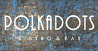

Request Demo

Why a contact less ordering system is a must have solution for post-lockdown recovery..

What will the past-corona road to recovery look like for restaurants?

5 Reasons to change your Restaurant POS Now!